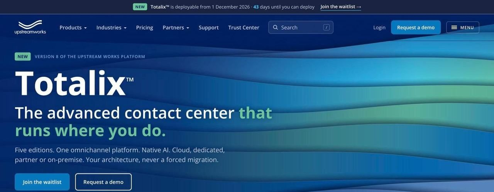
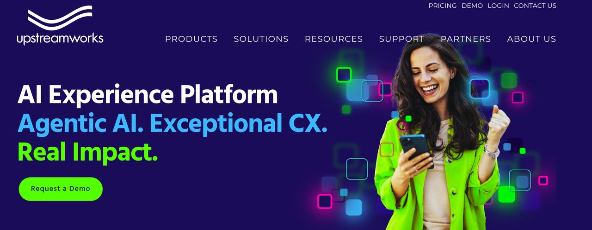
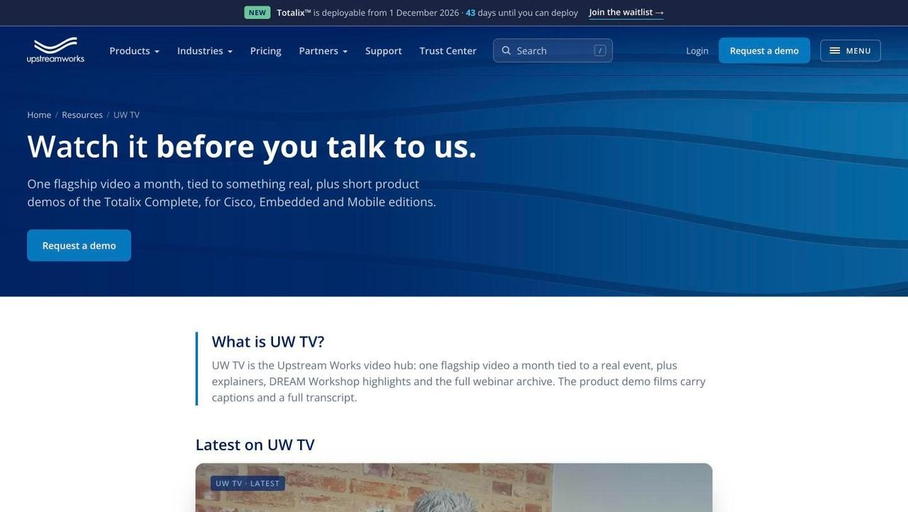

A new website, a new brand and a product launch — all on the same day.
Upstream Works has made contact-centre software for 25 years. In September 2026 they took AJH Technology on as their marketing function, on a monthly partnership. The first big job: rebuild upstreamworks.com from scratch, refresh the brand, and launch their new platform, Totalix™, with the new site on 14 October 2026.
A ten-year-old website, a product launch with a fixed date, and no marketing team.
The old upstreamworks.com was a WordPress site that had grown for a decade: hundreds of old blog posts, tag pages and campaign pages, and legal pages that hadn't been touched in years. It wasn't bringing in enquiries.
At the same time, Upstream had a new platform coming with a fixed launch date, and the name couldn't go public early. They needed a website, a brand and a launch campaign ready for the same morning — and there was no in-house marketing team to do it.


BeforeAfter
↔
Drag to compare. Left: the upstreamworks.com homepage before the rebuild. Right: the new site I built, live since 14 October 2026.
What I did
From plan to launch, in order.
I worked directly with Upstream's Chief Revenue Officer, with their channel and CRM lead handling the sales systems. From first plan to launch day took about six weeks.
Early Sept
Look before you build
I went through every page on the old site before designing anything, so nothing that brought in traffic or enquiries got lost. Then I wrote one plan document that everyone built from: the new page structure, what happens to every old link, a phased plan and the risks.
Full site inventory
Page-by-page sitemap
Plan for every old link
Risk list
Late Sept – 3 Oct
Brand first, then words
I helped name the new platform and wrote the positioning that every page, caption and video was checked against. Then I produced the new Upstream Works brand pack — colours, type, logo rules and product accents — shared as a design system and a code library so the website and the marketing used the same source.
Totalix naming support
Positioning
Brand pack
Sept – Oct
A new website, built from scratch
I moved the site off WordPress onto a fast, static build, deployed to Upstream's existing hosting. Old links were redirected so bookmarks and Google rankings didn't break. Their legal pages were moved across word for word. Seven enquiry forms were wired into their CRM and sales follow-up. The switch-over was rehearsed, with a one-click route back to the old site in case anything went wrong.
Static site, no WordPress
Old links redirected
7 forms into the CRM
Search & AI-answer friendly
One-click rollback
5 – 13 Oct
The campaign around it
A LinkedIn teaser series that never named the product before launch day. A new YouTube channel, UW TV. A company-wide email signature builder with the launch banner. A partner press release. And the launch film, shot on 12 October and edited for launch morning.
LinkedIn teasers
UW TV channel
Signature builder
Press release
Launch film
14 Oct
Launch day
The new site went live at around 2 pm, at the same time Totalix was announced. The old site stayed up right until the switch, so there was no downtime. The rollback wasn't needed.
15 Oct onwards
Launch day was the start
Colleague feedback from launch day was fixed the next morning. Since then: a Trust Center on the site itself, five product demo films with voiceover and captions, accessibility and security fixes, and daily security checks plus a weekly review of the whole site.
Trust Center
5 demo films
Daily security checks
Weekly site review
The Trust Center — Upstream's security controls, published on the main website instead of a separate site.

UW TV — the new video hub for the launch film and product demos, each with captions and a transcript.
Studio & video
The Totalix launch film.
Scripted, lit, shot and edited in-house.
Upstream's CRO on camera, filmed in a home studio set-up with a wide shot and a side angle, then edited and captioned for launch morning.
The five product demo films that followed were made from the product team's screen recordings, with chapter titles, voiceover and captions.
Plays from YouTube. Nothing loads from YouTube until you press play.
If you need a whole marketing function — website, brand, video and the work that keeps it all moving — that's a monthly partnership, priced on what you need.